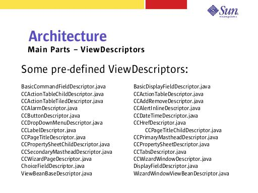

Notes:
This is a partial list of the ViewDescriptors that we have already defined. See package com.sun.enterprise.tools.guiframework.view.descriptors for a complete list and source.
Because we are not constrained by what package ViewBeans have to live in, we can instantiate classes like the WizardWindowViewBean without needing to create a separate servlet. Lockhart could take advantage of these features to greatly simplify some of their more complex components.